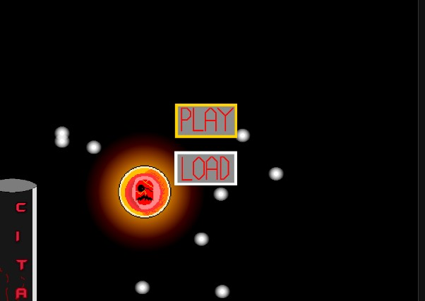
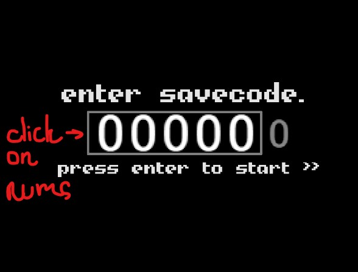

(Экспериментальная страница)
SaveMaker - шаблон для создания сохранений в 1 главе и стартового сохранения во 2 главе NCTW.
В 1 поле введите количество персонажей, с которыми вы подружились. (меньше 9)
Во 2 поле введите количество персонажей, с которыми вы говорили.
В 3 поле введите количество боссов, которых вы убили.
В 4 поле введите количество ударов боссов.
В 5 поле введите, получали ли вы урон. (1/0)